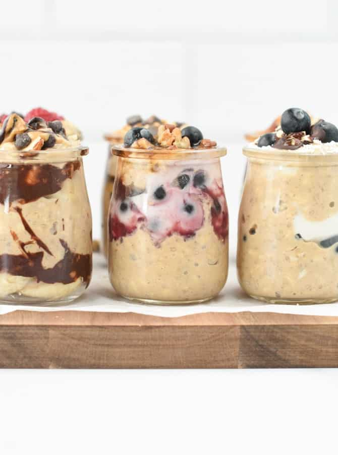

Overnight Goats

Description
Overnight oats are a healthy raw breakfast recipe that consists of soaking rolled oats in milk overnight in the fridge.
It has a similar texture to oatmeal, except it’s uncooked and preserves all the nutrients and healthy properties of the ingredients as no heat is involved.
Ingredients
- 1.5 cup Old-Fashioned Rolled Oats
- 2 tablespoons Chia Seeds
- 2 scoops Protein Powder
- 2 cups Almond Milk
- 2 tablespoons Maple Syrup
- 1 teaspoon Vanilla Extract
- 1 teaspoon Cinnamon
Instructions
- In a large mixing bowl, add old-fashioned rolled oats, chia seeds, protein powder, and cinnamon. Stir to distribute evenly.
- Stir in almond milk, maple syrup, and vanilla extract. Seal the bowl with a lid, refrigerate overnight. I recommend stirring the mixture 1 hour after you pop it in the fridge. This prevents the chia seeds from sinking to the bottom of the bowl.
- The next day, serve in small serving jars with peanut butter, dairy-free yogurt, fresh berries, and nuts.